Y19 (2019) — English translation
Living cells are covered with a membrane, the structural basis of which is a double layer of lipids, weakly permeable to water and practically impermeable to ions. Each cell must exchange various substances and, in particular, ions with the external environment. The transport of ions across the membrane plays an important role in the processes of cell excitation and signal transmission. Ions penetrate into and out of the cell through proteins built into the membrane - channels. Channels are proteins that function as membrane pores by forming openings through which ions can pass. Membrane channels are selective - permeable only to certain substances. Selectivity is determined by the radius of the pores and the distribution of charged functional groups in them. There are channels that selectively allow sodium ions to pass through (sodium channels), as well as potassium, calcium and chloride channels. (See Figure 1.) Figure 1. A cell with channels permeable to various substances
Living cells are covered with a membrane, the structural basis of which is a double layer of lipids, weakly permeable to water and practically impermeable to ions. Each cell must exchange various substances and, in particular, ions with the external environment. The transport of ions across the membrane plays an important role in the processes of cell excitation and signal transmission. Ions penetrate into and out of the cell through proteins built into the membrane - channels. Channels are proteins that function as membrane pores by forming openings through which ions can pass. Membrane channels are selective - permeable only to certain substances. Selectivity is determined by the radius of the pores and the distribution of charged functional groups in them. There are channels that selectively allow sodium ions to pass through (sodium channels), as well as potassium, calcium and chloride channels. (See Figure 1.)
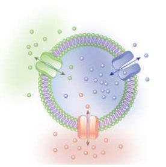
There are light-sensitive ion channels - channel rhodopsins. These channels transition from a closed state, in which they are impenetrable to ions, to an open state, absorbing photons of a certain wavelength (see Fig. 2). Figure 2. Photocycle of channel rhodopsin, three-state
There are light-sensitive ion channels - channel rhodopsins. These channels transition from a closed state, in which they are impenetrable to ions, to an open state, absorbing photons of a certain wavelength (see Fig. 2).
Figure 2. Photocycle of channel rhodopsin, three-state
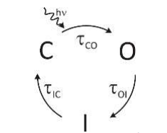
Next, the protein passes through several intermediate states to return from the open state to the closed state (in what follows we will assume that in intermediate states the channel is also impermeable to any ions). All these states together are called a photocycle (see Fig. 3., which shows a photocycle in which one intermediate state $I$, $C$ and $O$ are closed and open states, respectively). Transitions between these states occur with some probability. The transition from a closed state to an open state is impossible without absorption of light. In the presence of light, this transition also occurs with some probability. Figure 3. Closed and open channel states
Next, the protein passes through several intermediate states to return from the open state to the closed state (in what follows we will assume that in intermediate states the channel is also impermeable to any ions). All these states together are called a photocycle (see Fig. 3., which shows a photocycle in which one intermediate state $I$, $C$ and $O$ are closed and open states, respectively). Transitions between these states occur with some probability. The transition from a closed state to an open state is impossible without absorption of light. In the presence of light, this transition also occurs with some probability.
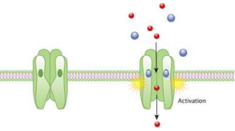
The probability of a transition between two states $A$ and $B$ is described by the value $\tau$ – the characteristic time of transition from $A$ to $B$. This time is defined as the inverse derivative of the transition probability with respect to time: $\tau_{AB}=\left(\frac{dp}{dt}\right)^{-1}$ (that is, the transition probability in time $dt$ is equal to $dp$).
Due to the free passage of charged particles (ions), the channels in the open state effectively increase the electrical conductivity of the cell membrane. To study the electrical properties of the membrane and study the properties of ion channels, there is a method of local potential fixation (Patch-clamp). The method is that a glass pipette forms a contact with a cell membrane with a resistance of several gigaohms - this is the so-called gigaohm contact. An electrode is placed in a pipette filled with electrolyte, the second electrode is placed extracellularly, in the washing fluid
Figure 4. Patch-clamp method. Formation of gigaohm contact
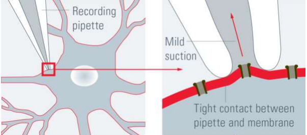
To measure the conductances of single channels, the pipette, together with a fragment of the cell membrane that is located inside it, is detached from the rest of the cell. The narrow tip of the pipette leaves such a small portion of the membrane that no more than one channel can be built into it. In the case of light-sensitive proteins, the current flowing through a fragment of the membrane is measured: jumps in current strength when the light is turned on indicate the opening of the light-sensitive channel. This method is called Single Channel Patch Clamp. (see Figure 5. Obtaining a membrane fragment, the right picture is a selected fragment with one channel).
Figure 5. Following steps after Figure 4 to obtain a membrane fragment on a pipette. The left picture is the Whole cell method (a whole cell is attached to a pipette), the right picture is the Single channel method.
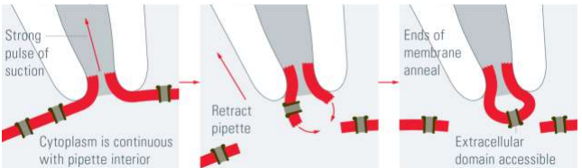
Let's consider measurements using the Single Channel Patch Clamp method for three channels. All three channels have photocycles consisting of three states: $C$ (closed), $O$ (opened) and $I$ (intermediate). The channels have the following characteristic transition times: $\tau_{CO}=10~\text{мс}$, $\tau_{OI}=10~\text{мс}$, $\tau_{IC}=0{,}1~\text{мс}$, $\tau_{CO}=1~\text{мс}$, $\tau_{OI}=10~\text{мс}$, $\tau_{IC}=30~\text{мс}$ $\tau_{CO}=1~\text{мс}$, $\tau_{OI}=10~\text{мс}$, $\tau_{IC}=1000~\text{мс}$. The graphs show $10$ current versus time plots for each channel (the green line shows the time when the light is on).
The graphs show $10$ current versus time plots for each channel (the green line shows the time when the light is on).
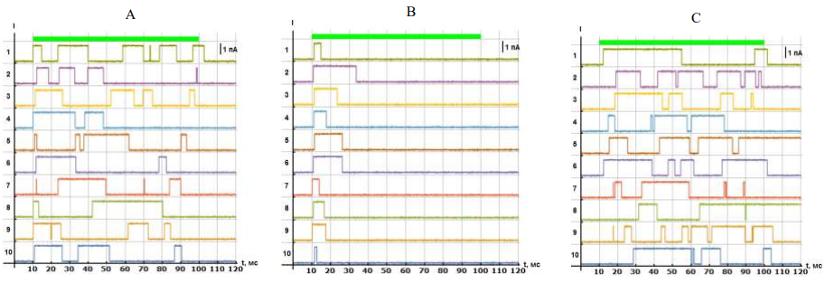
When measuring the conductivity of single channels, the current strength is very small and difficult to detect. In order to avoid these difficulties, a method is used in which a fragment of the membrane located inside the pipette is broken through by excess pressure, and the cell remains attached to the pipette. Thus, it turns out that the electrode inside the pipette is separated from the electrode in the washing liquid by a complete cell membrane. In this case, the solution inside the cell becomes the same as that which was poured into the pipette. This method is called Whole Cell Patch Clamp (see Figure 5, the left figure shows a Whole Cell contact, see Figure 6, which shows the entire cell) and it allows you to measure the currents caused by the conductivity of all channels located in the cell membrane together. Figure 6. Whole-cell connection.
When measuring the conductivity of single channels, the current strength is very small and difficult to detect. In order to avoid these difficulties, a method is used in which a fragment of the membrane located inside the pipette is broken through by excess pressure, and the cell remains attached to the pipette. Thus, it turns out that the electrode inside the pipette is separated from the electrode in the washing liquid by a complete cell membrane. In this case, the solution inside the cell becomes the same as that which was poured into the pipette. This method is called Whole Cell Patch Clamp (see Figure 5, the left figure shows a Whole Cell contact, see Figure 6, which shows the entire cell) and it allows you to measure the currents caused by the conductivity of all channels located in the cell membrane together.
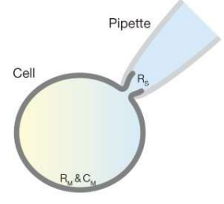
When the channel is opened, ions can pass through it both under the influence of an external electric field and as a result of thermal diffusion.
Note: mobility is the coefficient of proportionality between the speed of the drift movement of particles and the force acting on them: $\mu F=v$.
The relationship between the diffusion coefficient $D$, mobility $\mu$ and temperature $T$ was discovered when studying Brownian motion of particles independently by Einstein and Smoluchowski. Einstein-Smoluchowski relation: $$D=\mu kT, $$где $k$ – Boltzmann constant.
Note: Membrane potential is considered positive if the plus is on the inner surface of the cell membrane.
When conducting a real electrophysiological experiment, it is necessary to accumulate statistics, so the dependence of the current strength on time is measured for different voltages applied to the cell, and the experiment is also repeated on other cells with the same channels in the membrane. But all cells are different sizes, which is why different numbers of channels enter their membrane. Therefore, the readings taken for the current strength are normalized to a value proportional to the amount of proteins in the cell membrane. In electrophysiology, it is customary to normalize the current strength to the electrical capacitance of the cell (because the capacitance is proportional to the membrane area $C \propto S \propto N$). Figure 7. Whole-cell connection and cell equivalent circuit.
When conducting a real electrophysiological experiment, it is necessary to accumulate statistics, so the dependence of the current strength on time is measured for different voltages applied to the cell, and the experiment is also repeated on other cells with the same channels in the membrane. But all cells are different sizes, which is why different numbers of channels enter their membrane. Therefore, the readings taken for the current strength are normalized to a value proportional to the amount of proteins in the cell membrane. In electrophysiology, it is customary to normalize the current strength to the electrical capacitance of the cell (because the capacitance is proportional to the membrane area $C \propto S \propto N$).
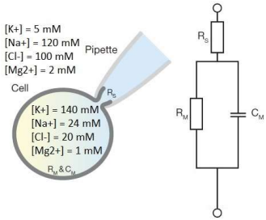
Other electrical characteristics of the cell ($R_M$ – the electrical resistance of the cell membrane (when all channels are closed), $R_S$ – the so-called “access” resistance to the cell) also affect the signal that is measured during whole-cell patch clamp measurements. An equivalent cell circuit is shown in Figure 7.
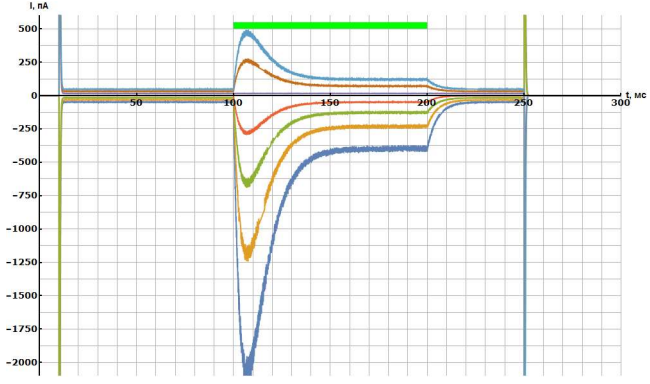
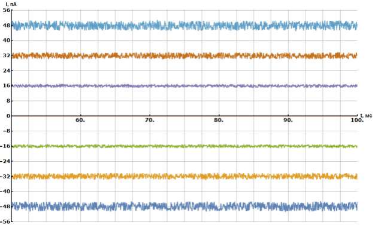
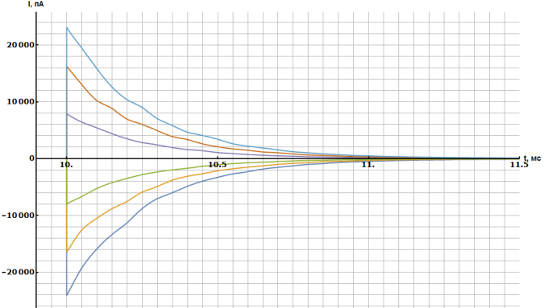
Source: https://pho.rs/p/3051